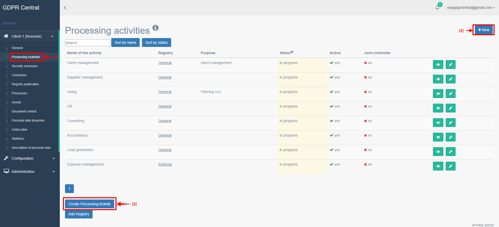

How do I create a new Processing Activity?¶
Understanding Processing Activity:¶
A Processing Activity is a written documentation and overview of procedures by which personal data are processed. It is mandated by GDPR regulations that a Record of Processing Activities be maintained by any organization. This must include significant information about data processing and mainly the purpose of the processing and the data recipients.
A Processing Activity can be a part of a registry, which is a collection of processing activities grouped in the business. Registry allows you to organize processing activities.
Creating New Processing Activity:¶
You can create a new Processing Activity in GDPR Central by performing the following steps:
Login to GDPR Central using your credentials, if not already logged in.
In the left pane, under your organization, click Processing Activities.
Click New button or Create Processing Activity button.
New Processing Activity screen appears.
Processing Activity Details¶ Field
Description
Name
Enter the name of the Processing Activity.
Registry
Select the Registry to which the Processing Activity belongs to.
Internal/external
Select internal if you want the activity to be kept internally or select external if you want the activity to be published externally.
Lead
Select the lead who will be responsible for this Processing Activity.
Add Purpose
Click this button to add a purpose. You can add multiple purpose here.
Description
Enter the purpose why this information is collected.
Source
Enter a source for the data.
Data Subject Categories
Select the data subject whose data is being actively processed in this activity. Click Add new data subject category button to add a new one.
Personal Data
- Select the personal data collected by this Processing Activity.
Legal Basis – Select the legal basis or the reason why we are collecting this information.
Legal Basis – special category– Select the category for collecting this personal data.
Data Security Assessment – Select the data security assessment rating of either High, Medium, or Low.
Storage / Processing Medium – Select the appropriate storage or processing medium where this personal data will be stored or processed.
Retention Time – Select the retention time for this personal data.
Additional Information – Enter any additional information you deem fit.
Rights of the Data Subject
Enter details about how the data subject can exercise their rights with regards to their data.
Recipients
Select the recipients (persons or organization with whom this information is shared) for this processing activity and any additional details as deemed necessary.
Applied Security Measures
Select the appropriate security measure applied for this Processing Activity. You can add more than one security measure.
Complete the information in this screen and click Save.
Processing Activity Overview screen with status of the Processing Activity created is displayed, along with the minimum set of tasks that need to be completed or is complete. You can have the following statuses:
In progress – This means that there are still certain items or actions within the Processing Activity that needs to be completed.
Complete – This means that all the minimum requirements i.e. items or actions within the Processing Activity has been completed. Once all the fields are completed, the status automatically changes to complete.
Approved - This means that one of the approvers have reviewed the activity and its contents and have marked this as approved.
Note
You can configure additional statuses if needed. If you would like to add an additional step, please get in touch with us.
- You will find additional items in this screen (Processing Activity Overview screen) that can be filled up:
Joint Controllers – You can add a joint controller to the process activity if the process is a joint process between your company and another company, within the GDPR Central platform.
Comments – You can enter comments to be shared with other people who are working with this process activity, verifying it, or validating it.
Actions – If you have user privileges, “Ask for approval” button will be available. You can click this to request approval. If you have administrator privileges, “Approve processing activity” button will be available. You can review the Processing Activity and then click this button to approve the same.
- You will also find the following buttons in this screen (Processing Activity Overview screen):
Deactivate – You can click this button to deactivate a Processing activity if you do not need a Process Activity anymore. You will not be able to use this button if you are logged in with read-only role.
Duplicate – If you have similar processing activities, then you can click this button to create a duplicate Processing Activity and edit it to satisfy your requirements and click Save. You will not be able to use this button if you are logged in with read-only role.
Compare – You can click this button to show what has changed since the previous version. You can use this button to review changes before approving a Process Activity.